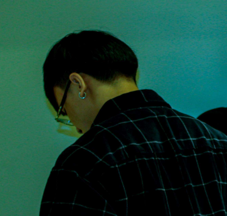

01 / THE PERSON
BEHIND THE
SKETCHBOOK.
Artist. Student. Gamer. Always trying something creative.

CYRILL KEN GAILO / CK
Hello, I’m CK.
I am a third-year BS Multimedia Arts student at FEU Institute of Technology. I enjoy creating art in different mediums, especially figure drawing, traditional art, and painting.
I also like digital art, character design, animation, and photography. I enjoy capturing everyday moments and exploring how movement and design can bring ideas to life.
Outside of art
I play fighting games and real-time strategy games like StarCraft. I am interested in music, filming, and learning game development bit by bit.
My goal
I want to keep improving my photography, animation, and design skills. In the future, I would like to work in the creative film industry, possibly as an indie film producer.
MY EDUCATION
FEU Institute of Technology
Program: BS Multimedia Arts
Year level: Third Year
College: 2023–Present
Visual Arts
Figure drawing, painting, character illustrations, and turning ideas into images.
Photography
Capturing everyday places, changing light, and small moments from my point of view.
Web Design
Learning HTML structure, CSS styling, responsive pages, and basic JavaScript buttons.